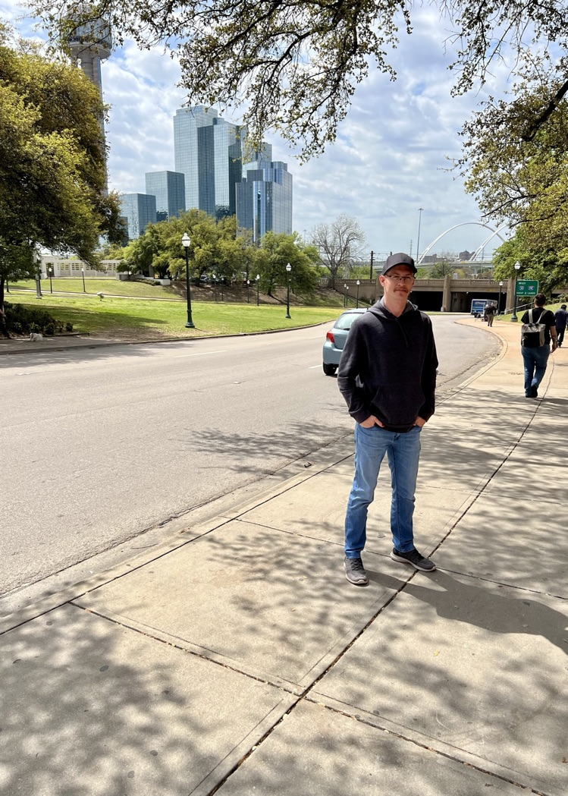
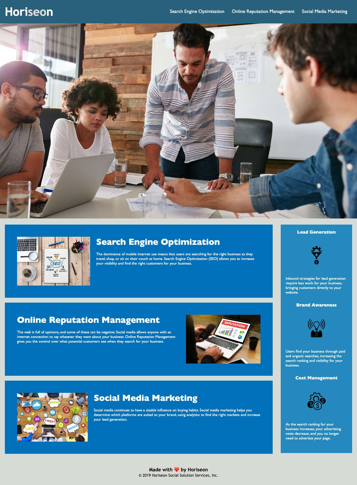
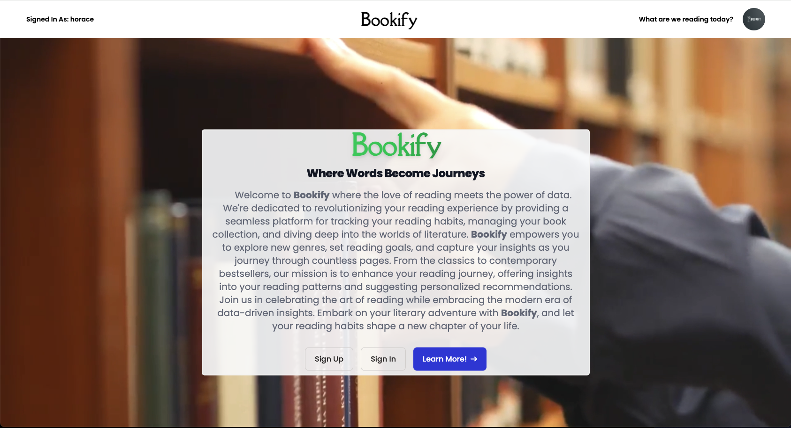
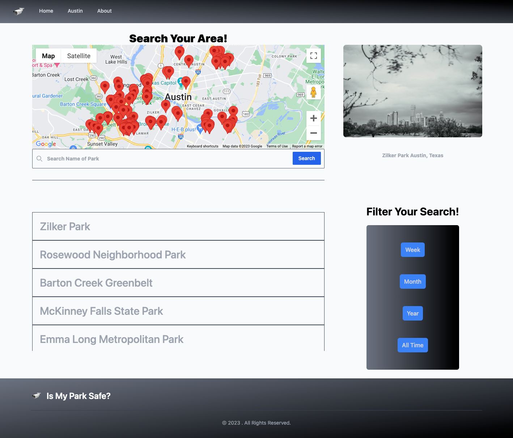

In today's dynamic digital landscape, a robust and versatile skill set is paramount for creating
engaging and interactive web experiences. My expertise encompasses a comprehensive array of
technologies, enabling me to craft seamless and captivating web applications. With proficiency in
HTML, CSS, and JavaScript, I can construct the foundational elements of web pages, ensuring
aesthetic appeal and optimal user experience.

Moreover, my adeptness extends to the backend realm, where I am well-versed in utilizing Node.js and
Express to architect and develop server-side functionalities. This proficiency empowers me to create
efficient and scalable web applications that seamlessly handle user requests and data interactions.
My expertise in MySQL further enhances my capability to design and manage databases, ensuring the
seamless storage and retrieval of critical information.


To enhance user
interface and overall design, I am adept in utilizing the Handlebars templating engine. This allows
me to efficiently integrate dynamic content and streamline the presentation of data, contributing to
a polished and responsive user experience.
In a nutshell, my skill set represents a holistic approach to web development, spanning from the
frontend design with HTML, CSS, and JavaScript, to the backend implementation with Node.js, Express,
and MySQL. Combined with my proficiency in utilizing the Handlebars templating engine, I am equipped
to conceptualize, create, and deploy robust web applications that seamlessly merge form and
function.